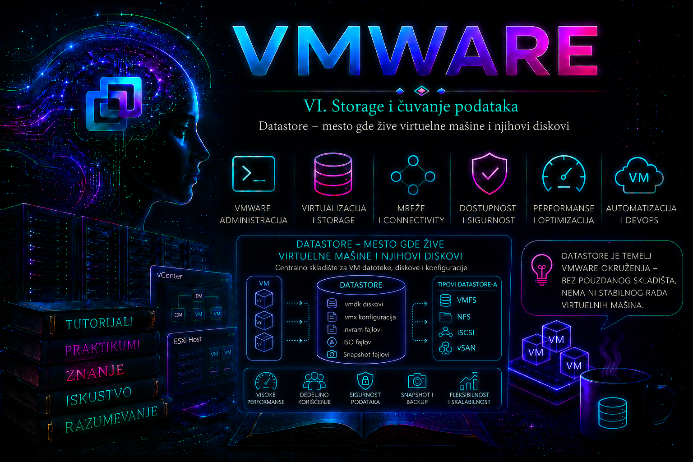

VMware

Datastore predstavlja logički prostor za skladištenje podataka koji ESXi hostovi koriste za čuvanje virtuelnih mašina, virtuelnih diskova, template-a, ISO slika, snapshot datoteka, logova i drugih objekata potrebnih za rad VMware infrastrukture. Za administratora datastore nije samo „disk na kojem se nalazi VM”, već centralna tačka u kojoj se susreću fizički storage, storage protokoli, VMware filesystem, virtuelne mašine, dostupnost, performanse, backup i oporavak sistema.
Kada se kreira virtuelna mašina, administrator bira datastore na kojem će biti smešteni njeni konfiguracioni fajlovi i virtuelni diskovi. ESXi zatim koristi taj datastore kao skladišni prostor iz kojeg čita podatke potrebne za pokretanje VM-a i u koji upisuje sve promene nastale tokom njegovog rada.
Ako je datastore nedostupan, virtuelna mašina može ostati bez pristupa svom konfiguracionom fajlu ili virtuelnim diskovima. Posledice mogu biti usporenje aplikacija, zamrzavanje operativnog sistema gosta, neuspešno pokretanje VM-a, prekid backup poslova ili potpuni prekid rada servisa. Zbog toga storage predstavlja jednu od najvažnijih oblasti VMware administracije.
Datastore nije isto što i fizički disk
Datastore predstavlja logičku apstrakciju storage prostora. Ispod njega se može nalaziti lokalni disk, RAID grupa, SAN LUN, NFS export, vSAN kapacitet ili storage sistem koji koristi Virtual Volumes.
Osnovni slojevi mogu se predstaviti ovako:
Fizički diskovi ili flash uređaji
│
▼
RAID grupa, storage pool ili disk grupa
│
▼
LUN, NFS export, vSAN kapacitet ili storage container
│
▼
Storage protokol i pristupna mreža
│
▼
VMFS, NFS, vSAN ili vVol datastore
│
▼
Folderi virtuelnih mašina
│
▼
VMX, VMDK, snapshot-i, logovi i ostale datotekeKvar fizičkog diska ne mora automatski značiti gubitak datastore-a ako storage sistem koristi odgovarajući RAID, replikaciju ili drugi mehanizam zaštite. Sa druge strane, potpuno ispravan storage sistem može postati nedostupan ESXi hostu ako postoji problem sa SAN putanjom, iSCSI mrežom, NFS servisom, zoning konfiguracijom, autentifikacijom ili VMkernel mrežom.
Najčešći tipovi datastore-a
VMFS datastore
VMFS, odnosno VMware Virtual Machine File System, predstavlja klasterovani filesystem namenjen blok storage uređajima. Koristi se nad lokalnim diskovima, Fibre Channel LUN-ovima, iSCSI LUN-ovima, Fibre Channel over Ethernet uređajima i drugim kompatibilnim blok storage sistemima.
Klasterovana priroda VMFS-a omogućava da više ESXi hostova istovremeno pristupa istom datastore-u. VMware mehanizmi zaključavanja sprečavaju da dva hosta istovremeno na neispravan način menjaju iste datoteke virtuelne mašine.
U savremenim vSphere okruženjima standardni format je VMFS 6. Prilikom kreiranja novog datastore-a treba koristiti format koji odgovara verziji i kompatibilnosti hostova u konkretnom okruženju.
NFS datastore
NFS datastore koristi mrežni filesystem koji storage server ili NAS uređaj izlaže ESXi hostovima. Za razliku od VMFS-a, gde VMware kreira filesystem nad blok uređajem, kod NFS-a filesystem održava NFS server, dok ESXi mountuje izvezeni direktorijum.
vSphere podržava NFS 3 i NFS 4.1. Izbor verzije utiče na način autentifikacije, multipathing, mrežnu konfiguraciju i podržane funkcionalnosti. NFS storage zahteva pouzdanu VMkernel mrežu, pravilno podešen export i odgovarajuće dozvole za ESXi hostove.
Važna verzijska razlika postoji kod vezivanja NFS saobraćaja za VMkernel adapter. NFS 4.1 podržava više serverskih adresa radi multipathing-a, ali je eksplicitni VMkernel port binding za NFS 4.1 uveden u ESXi 8.0 Update 3. Zato postupak iz starijeg vSphere izdanja ne treba prenositi bez provere na 8.0 U3 ili novije okruženje. NFS 3 i NFS 4.1 datastore ne treba montirati na istom hostu prema istom export-u, jer te verzije koriste različite modele zaključavanja i takva kombinacija nije podržan način zajedničkog pristupa istim datotekama.
vSAN datastore
vSAN kombinuje lokalne diskove ili flash uređaje ESXi hostova u distribuirani datastore klastera. Dostupnost podataka ne određuje samo tradicionalni RAID, već storage politike virtuelnih mašina kojima se definišu tolerancija na kvarove, broj kopija podataka, način kodiranja i druge karakteristike.
vSAN datastore se ne administrira na isti način kao klasični VMFS LUN. Njegovo stanje zavisi od zdravlja hostova, disk grupa, mreže, storage politika i usklađenosti objekata.
vVol datastore
Virtual Volumes omogućavaju da storage sistem upravlja objektima virtuelnih mašina na granularnijem nivou. Umesto da veliki broj VM-ova bude smešten unutar jednog tradicionalnog LUN-a, storage funkcionalnosti se mogu primenjivati prema zahtevima pojedinačnih virtuelnih mašina i njihovih diskova.
vVol arhitektura se oslanja na VASA provider, storage container i protokol endpoint. Njena dostupnost zato zavisi i od pravilne komunikacije vCenter Servera sa VASA providerom.
Lokalni i deljeni datastore
Lokalni datastore dostupan je samo hostu na kojem se fizički nalazi. Pogodan je za laboratorijska okruženja, privremene virtuelne mašine, određene servisne VM-ove ili specifične arhitekture, ali sam po sebi ne omogućava drugim hostovima da pristupe istim VM datotekama.
Deljeni datastore dostupan je većem broju ESXi hostova. On predstavlja važan uslov za klasične scenarije u kojima HA nakon pada jednog hosta registruje i pokreće virtuelnu mašinu na drugom hostu. Deljeni storage takođe pojednostavljuje compute vMotion, jer se tokom migracije hosta lokacija VMDK datoteka ne mora menjati.
Treba razlikovati sledeće operacije:
- Compute vMotion – menja host na kojem VM radi, dok datoteke mogu ostati na istom zajedničkom datastore-u.
- Storage vMotion – premešta datoteke VM-a sa jednog datastore-a na drugi.
- Kombinovana migracija – istovremeno menja host i datastore, ako infrastruktura, licence i kompatibilnost to dozvoljavaju.
Šta se nalazi u folderu virtuelne mašine
Svaka virtuelna mašina najčešće ima poseban folder na datastore-u. Nazivi i broj datoteka zavise od konfiguracije VM-a, broja diskova, snapshot-a, tipa firmware-a i trenutnog stanja virtuelne mašine.
/vmfs/volumes/PROD-VMFS01/APP-SRV01/
APP-SRV01.vmx
APP-SRV01.vmdk
APP-SRV01-flat.vmdk
APP-SRV01.nvram
APP-SRV01.vmsd
APP-SRV01.vswp
vmware.log
vmware-1.logNajvažnije datoteke su:
- .vmx – glavni konfiguracioni fajl virtuelne mašine.
- .vmdk – descriptor virtuelnog diska sa informacijama o geometriji, tipu i povezanoj data datoteci.
- -flat.vmdk – datoteka koja kod klasičnog baznog VMFS diska sadrži stvarne blokove podataka.
- -delta.vmdk ili -sesparse.vmdk – datoteke povezane sa snapshot lancem.
- .nvram – stanje BIOS ili UEFI firmware podešavanja.
- .vmsd – informacije o snapshot hijerarhiji.
- .vmsn – stanje memorije i uređaja kada je snapshot kreiran sa čuvanjem memorije.
- .vswp – swap datoteka virtuelne mašine, čija veličina zavisi od dodeljene memorije i memory reservation vrednosti.
- vmware.log – aktuelni log virtuelne mašine.
- vmware-#.log – prethodne rotirane verzije VM loga.
Administrator ne treba ručno da briše, preimenuje ili menja VMDK, snapshot, VMX i druge datoteke dok prethodno ne utvrdi njihovu ulogu i međusobne veze. Datoteka koja deluje kao stari disk može biti deo aktivnog snapshot lanca. Njeno brisanje može trajno oštetiti virtuelnu mašinu.
Kako ESXi identifikuje datastore
Datastore ima prikazano ime i jedinstveni identifikator, odnosno UUID. Putanja sa imenom datastore-a obično predstavlja simboličku vezu ka UUID putanji.
ls -l /vmfs/volumesPrimer:
PROD-VMFS01 -> 681f2b5a-a1b2c3d4-1122-001122334455
ISO-NFS01 -> 9f21a611-55aa77ccPutanja:
/vmfs/volumes/PROD-VMFS01lakša je za svakodnevni rad, dok UUID ostaje važan tokom troubleshooting-a, posebno ako se ime promeni, datastore postane nemontiran ili ESXi otkrije snapshot kopiju VMFS volumena.
Prikaz datastore-a u vSphere Client-u
U vSphere Client-u administrator može otvoriti:
Menu → Storage → Datastoresili izabrati host i otvoriti:
Host → Configure → Storage → DatastoresZa svaki datastore treba proveriti:
- ime i tip datastore-a;
- ukupan kapacitet;
- slobodan i zauzet prostor;
- hostove koji imaju pristup;
- virtuelne mašine i template-e koji ga koriste;
- storage uređaj ili mrežni share na kojem se nalazi;
- alarme, događaje i aktuelne zadatke;
- performanse, latenciju, IOPS i throughput;
- storage politike i kompatibilnost, kada se koriste.
Datastore Browser
Datastore Browser omogućava pregled foldera i datoteka, upload i download određenih objekata, kreiranje direktorijuma i obavljanje osnovnih operacija nad sadržajem datastore-a.
Tipične bezbedne aktivnosti su:
- upload instalacionih ISO slika;
- kreiranje organizovanog direktorijuma za ISO fajlove;
- provera postojanja VMX i VMDK datoteka;
- pregled veličine snapshot datoteka;
- preuzimanje logova radi analize;
- registracija VMX fajla kada je VM uklonjen samo iz inventory-ja.
Datastore Browser nije zamena za backup alat niti treba da se koristi za nasumično ručno kopiranje aktivnih VM datoteka. Datoteke VM-a mogu biti zaključane, međusobno zavisne ili promenjene tokom kopiranja.
Pregled datastore-a kroz ESXi Shell
Komande u ovom odeljku su read-only i bezbedne su za prikupljanje početnih dokaza, osim kada je izričito navedeno da komanda radi rescan, mount ili unmount i time menja stanje. ESXi Shell ili SSH treba omogućiti samo prema operativnoj politici, koristiti nalog sa potrebnim privilegijama, a po završetku privremeni pristup ponovo ograničiti.
Za rad kroz ESXi Shell ili SSH pristup najpre treba utvrditi koje filesystem-e host vidi:
esxcli storage filesystem listKomanda prikazuje mount point, naziv, UUID, mount status, tip, veličinu i slobodan prostor.
Primer skraćenog izlaza:
Mount Point Volume Name Mounted Type Size Free
--------------------------------------- ------------- ------- ----- ------------ ------------
/vmfs/volumes/681f2b5a-a1b2c3d4 PROD-VMFS01 true VMFS-6 2198754826240 780123013120
/vmfs/volumes/9f21a611-55aa77cc ISO-NFS01 true NFS 1099511627776 650123456512Za prikaz VMFS volumena i uređaja na kojima se nalaze koristi se:
esxcli storage vmfs extent listOva komanda povezuje naziv VMFS datastore-a sa njegovim UUID-om, brojem extent-a, canonical nazivom uređaja i particijom.
Pregled storage adaptera:
esxcli storage core adapter listPregled storage uređaja:
esxcli storage core device listSažetiji pregled uređaja:
esxcli storage core device list -cPregled aktivnih putanja:
esxcli storage core path listPregled NMP uređaja i aktivnih multipathing politika:
esxcli storage nmp device listPregled sadržaja datastore-a:
ls -lah /vmfs/volumes/PROD-VMFS01Pregled karakteristika određenog filesystem-a:
vmkfstools -P /vmfs/volumes/PROD-VMFS01Za prikaz zauzeća datastore-a može se koristiti:
vdf -h
Komanda df -h prvenstveno prikazuje ESXi sistemske filesystem-e i ne treba je smatrati glavnom komandom za analizu VMFS kapaciteta. Za datastore-e su precizniji esxcli storage filesystem list, vdf -h i podaci iz vCenter Servera.
Pronalaženje VM-a i njegovih datoteka kroz CLI
Lista registrovanih virtuelnih mašina dobija se komandom:
vim-cmd vmsvc/getallvmsPrimer:
Vmid Name File
12 APP-SRV01 [PROD-VMFS01] APP-SRV01/APP-SRV01.vmx
18 DB-SRV01 [PROD-VMFS02] DB-SRV01/DB-SRV01.vmxNa ovaj način administrator brzo povezuje VM sa datastore-om i putanjom konfiguracionog fajla.
Za pronalaženje VMDK referenci iz VMX konfiguracije može se koristiti:
grep -i "fileName" /vmfs/volumes/PROD-VMFS01/APP-SRV01/APP-SRV01.vmxOvu komandu treba koristiti samo za pregled. Ručna izmena VMX fajla zahteva prethodni backup, razumevanje konfiguracije i odgovarajuću proceduru.
Pregled datastore-a preko PowerCLI-ja
Povezivanje sa vCenter Serverom:
Connect-VIServer -Server vcsa.lab.localPrikaz svih datastore-a:
Get-DatastorePregled osnovnih podataka:
Get-Datastore |
Select-Object Name,
Type,
CapacityGB,
FreeSpaceGBIzračunavanje procenta slobodnog prostora:
Get-Datastore |
Select-Object Name,
Type,
CapacityGB,
FreeSpaceGB,
@{Name="FreePercent";Expression={
[math]::Round(($_.FreeSpaceGB / $_.CapacityGB) * 100, 2)
}} |
Sort-Object FreePercentPronalaženje datastore-a sa manje od 20 procenata slobodnog prostora:
Get-Datastore |
Where-Object {
$_.CapacityGB -gt 0 -and
(($_.FreeSpaceGB / $_.CapacityGB) * 100) -lt 20
} |
Select-Object Name,
CapacityGB,
FreeSpaceGB,
@{Name="FreePercent";Expression={
[math]::Round(($_.FreeSpaceGB / $_.CapacityGB) * 100, 2)
}}Prikaz hostova povezanih sa datastore-om:
$datastore = Get-Datastore -Name "PROD-VMFS01"
Get-VMHost |
Where-Object {
(Get-Datastore -VMHost $_).Name -contains $datastore.Name
} |
Select-Object Name, ConnectionState, PowerStatePrikaz virtuelnih mašina koje koriste određeni datastore:
Get-Datastore -Name "PROD-VMFS01" |
Get-VM |
Select-Object Name, PowerState, VMHostIzvoz izveštaja:
Get-Datastore |
Select-Object Name,
Type,
CapacityGB,
FreeSpaceGB,
@{Name="FreePercent";Expression={
[math]::Round(($_.FreeSpaceGB / $_.CapacityGB) * 100, 2)
}} |
Export-Csv -Path "./datastore-report.csv" -NoTypeInformationDatastore i prostor koji VM stvarno koristi
Kapacitet konfigurisanog virtuelnog diska i fizički zauzet prostor na datastore-u nisu uvek isti. Kod thin provisioned diska može biti konfigurisan kapacitet od 500 GB, dok je na datastore-u trenutno zauzeto samo 80 GB. Kako gost upisuje nove blokove, zauzeće raste.
Na datastore kapacitet utiču:
- bazni VMDK diskovi;
- thin provisioning i stvarna potrošnja blokova;
- snapshot delta datoteke;
- swap datoteke virtuelnih mašina;
- suspend datoteke;
- ISO slike;
- template-i i klonovi;
- logovi;
- neobrisane datoteke starih VM-ova;
- privremeni prostor potreban za snapshot konsolidaciju, migraciju i backup.
Administrator zato ne sme planirati kapacitet samo na osnovu zbira veličina aktivnih VMDK diskova. Potrebna je rezerva za rast, operativne aktivnosti i nepredviđene događaje.
Datastore i snapshot-i
Snapshot ne predstavlja potpunu nezavisnu kopiju virtuelne mašine. Nakon kreiranja snapshot-a, novi upisi se usmeravaju u delta datoteku, dok bazni disk ostaje deo aktivnog lanca. Delta datoteka može rasti sve dok postoji slobodan prostor na datastore-u.
Dugotrajni snapshot-i mogu izazvati:
- veliko zauzeće prostora;
- duže vreme konsolidacije;
- dodatnu storage latenciju;
- komplikovaniji disk lanac;
- rizik da datastore ostane bez slobodnog prostora;
- neuspeh backup ili migracionih poslova.
Pre brisanja velikog snapshot-a treba proveriti slobodan kapacitet, stanje VM-a, trajanje snapshot-a, aktivne backup poslove i očekivano opterećenje storage sistema. Operacija „Delete” uklanja snapshot iz lanca konsolidacijom podataka; ona ne znači jednostavno trenutno brisanje jedne male datoteke.
Datastore i HA
vSphere HA mora imati mogućnost da na preživelom hostu pristupi konfiguraciji i diskovima virtuelne mašine koju treba ponovo pokrenuti. Kod klasičnog shared-storage modela to znači da svi relevantni hostovi moraju videti datastore na kojem se VM nalazi.
Ako samo jedan host izgubi storage putanju, a ostali hostovi datastore i dalje vide, problem nije isti kao potpuni kvar storage sistema. Administrator mora utvrditi da li je kvar:
- ograničen na jedan ESXi host;
- ograničen na jednu putanju;
- ograničen na jedan datastore;
- prisutan na svim hostovima;
- izazvan storage sistemom ili storage mrežom.
Ova razlika određuje da li treba raditi rescan jednog hosta, proveriti HBA ili VMkernel interfejs, uključiti storage tim, migrirati VM-ove ili aktivirati širi incidentni postupak.
Datastore i backup
Backup alat često kreira privremeni snapshot kako bi dobio konzistentnu tačku iz koje čita podatke virtuelnog diska. Ako backup traje dugo, snapshot delta može značajno porasti. Ako backup ne završi pravilno, snapshot ili zahtev za konsolidaciju mogu ostati iza njega.
Zbog toga se kod naglog rasta datastore-a proveravaju:
- aktuelni i neuspešni backup poslovi;
- novi snapshot-i;
- stanje „Virtual machine disks consolidation is needed”;
- veličina delta datoteka;
- promene u aplikacionom opterećenju;
- novi VM-ovi, klonovi ili ISO slike.
Backup kopija ne treba da bude smeštena samo na istom datastore-u kao produkcioni VM. Kvar datastore-a tada bi istovremeno ugrozio i primarne podatke i backup.
Performanse datastore-a
Veliki slobodan kapacitet ne znači automatski dobre performanse. Datastore može imati dovoljno prostora, a da VM-ovi ipak rade sporo zbog visoke latencije, nedovoljnog broja diskova, zasićenih storage kontrolera, problema sa putanjama ili velikog broja istovremenih I/O operacija.
Važni pokazatelji su:
- IOPS – broj ulazno-izlaznih operacija u sekundi;
- throughput – količina prenetih podataka u jedinici vremena;
- latency – vreme potrebno da se I/O zahtev obradi;
- queue depth – broj zahteva koji čekaju obradu;
- read/write odnos – karakter opterećenja;
- blok veličina – veličina pojedinačnih I/O operacija;
- path stanje – broj i status dostupnih storage putanja.
U vSphere Client-u performanse se proveravaju izborom datastore-a ili hosta i otvaranjem:
Monitor → Performance → AdvancedZa realnu dijagnostiku treba posmatrati korelaciju između VM, host i datastore metrika. Jedan spor VM ne mora značiti spor datastore, dok istovremeno usporenje većeg broja VM-ova na istom datastore-u snažno ukazuje na zajednički storage problem.
Praćenje storage-a kroz esxtop
Komanda:
esxtopzatim taster:
uotvara prikaz storage uređaja. U zavisnosti od prikaza i verzije, administrator prati metrike kao što su:
- DAVG/cmd – prosečno vreme obrade zahteva na storage uređaju;
- KAVG/cmd – vreme provedeno u ESXi kernel sloju;
- GAVG/cmd – ukupna latencija koju VM vidi;
- CMDS/s – broj komandi u sekundi;
- READS/s i WRITES/s – broj čitanja i upisa;
- MBREAD/s i MBWRTN/s – količina pročitanih i upisanih podataka.
Visoka DAVG vrednost obično usmerava analizu ka storage uređaju, fabric mreži ili storage sistemu. Visoka KAVG vrednost može ukazivati na redove i zadržavanje unutar hosta. GAVG predstavlja zbir različitih komponenti kašnjenja i pokazuje ukupan efekat koji radno opterećenje oseća.
Vrednosti se moraju tumačiti u kontekstu konkretnog storage sistema i njegovih očekivanih performansi. Jedan trenutni skok nije isto što i trajna povišena latencija tokom perioda u kojem aplikacije prijavljuju problem.
Rescan storage adaptera
Kada storage tim predstavi novi LUN ili se putanja ponovo uspostavi, ESXi host mora osvežiti pogled na storage uređaje.
Pregled adaptera:
esxcli storage core adapter listRescan svih adaptera:
esxcli storage core adapter rescan --allNakon toga proverava se:
esxcli storage core device list
esxcli storage vmfs extent list
esxcli storage filesystem listRescan ne treba koristiti kao nasumično rešenje za svaki storage problem. Pre izvršavanja u produkciji treba razumeti obim incidenta, stanje storage sistema i moguće posledice većeg broja istovremenih rescan operacija na svim hostovima.
Montiranje i demontiranje datastore-a
Pregled montiranih i nemontiranih filesystem-a:
esxcli storage filesystem listMontiranje prema labeli:
esxcli storage filesystem mount -l PROD-VMFS01Montiranje prema UUID-u:
esxcli storage filesystem mount -u 681f2b5a-a1b2c3d4-1122-001122334455Demontiranje:
esxcli storage filesystem unmount -l PROD-VMFS01Demontiranje datastore-a je kontrolisana administrativna promena, a ne obična komanda za rešavanje problema. Pre toga mora se proveriti da datastore:
- ne sadrži aktivne VM-ove;
- nije odredište HA heartbeat-a koje je i dalje potrebno klasteru;
- ne sadrži registrovane template-e koji se koriste;
- nije podešen za host scratch, core dump, logove ili swap;
- nije deo aktivnog Storage DRS procesa;
- nema otvorene datoteke i aktivne zadatke;
- više nije potreban nijednom hostu na kojem se uklanja.
Kod trajnog uklanjanja LUN-a pravilni redosled obično uključuje migraciju ili uklanjanje potrošača, demontiranje datastore-a na svim hostovima, odvajanje uređaja, uklanjanje prezentacije sa storage strane i završni rescan. Preskakanje koraka može izazvati APD događaje, greške ili nekonzistentan prikaz storage-a.
APD i PDL stanja
Kod ozbiljnih storage prekida administrator može naići na izraze APD i PDL.
- APD – All Paths Down označava da su sve putanje do uređaja trenutno nedostupne, ali host nema potvrdu da je uređaj trajno uklonjen.
- PDL – Permanent Device Loss označava stanje u kojem storage sistem hostu jasno saopštava da uređaj više nije dostupan i da se pristup neće obnoviti u postojećem obliku.
APD može biti posledica prekida mreže, fabric problema, restarta storage kontrolera ili drugih privremenih događaja. PDL se može javiti kada je LUN pogrešno uklonjen ili trajno povučen bez pravilne procedure.
Kod ovih stanja najvažnije je izbeći panične i destruktivne komande. Prvo se prikupljaju podaci iz vCenter događaja, vmkernel.log, stanja putanja i storage sistema, a zatim se odluke donose zajedno sa storage i mrežnim timom.
Logovi važni za datastore troubleshooting
Najvažniji ESXi log za veliki broj storage problema je:
/var/run/log/vmkernel.logPregled poslednjih poruka:
tail -n 100 /var/run/log/vmkernel.logPraćenje novih poruka:
tail -f /var/run/log/vmkernel.logPretraga storage termina:
grep -Ei "APD|PDL|NMP|VMFS|I/O error|nfs|iscsi|scsi" \
/var/run/log/vmkernel.log | tail -n 100Dodatno se proveravaju:
/var/run/log/hostd.log– zadaci i upravljanje hostom;/var/run/log/vobd.log– sistemski događaji i VOB poruke;/var/run/log/vmkernel.log– kernel, storage adapteri, putanje, uređaji i VMFS;- vCenter Events i Tasks – vremenska linija promena i alarma;
- logovi storage sistema, SAN switch-eva, NAS uređaja ili iSCSI mreže.
Metodologija za datastore troubleshooting
Dobar administrator ne počinje nasumičnim restartovanjem servisa i ponavljanjem rescan komandi. Najpre određuje obim problema.
1. Utvrditi šta je pogođeno
- Jedna virtuelna mašina?
- Sve virtuelne mašine na jednom datastore-u?
- Svi datastore-i na jednom hostu?
- Jedan datastore na svim hostovima?
- Čitav storage sistem?
2. Utvrditi vrstu problema
- nedostupnost;
- visoka latencija;
- popunjenost;
- gubitak jedne ili svih putanja;
- nemogućnost montiranja;
- greška filesystem-a;
- snapshot rast;
- problem sa pravima ili NFS export-om.
3. Proveriti vremensku liniju
- Kada je problem počeo?
- Da li je prethodila promena na storage sistemu?
- Da li je promenjen zoning ili masking?
- Da li je pokrenut backup, snapshot, kloniranje ili Storage vMotion?
- Da li je host restartovan ili ažuriran?
- Da li postoji mrežni incident?
4. Uporediti hostove
Ako drugi hostovi normalno vide isti datastore, verovatnije je da je problem lokalizovan na host, HBA, VMkernel interfejs, mrežni uplink ili pojedinačnu putanju. Ako ga nijedan host ne vidi, analiza se širi na storage sistem, SAN fabric, NAS servis ili zajedničku mrežnu infrastrukturu.
5. Sačuvati dokaze pre promene
Pre restartovanja servisa, demontiranja datastore-a ili reboot-a hosta treba sačuvati:
- vCenter alarme i događaje;
- izlaz ključnih ESXi komandi;
- relevantne log poruke sa vremenom događaja;
- screenshot ili izvoz performansi;
- informacije o pogođenim VM-ovima;
- stanje storage kontrolera i mrežnih uređaja.
Praktikum 1 – Inventar i mapiranje datastore infrastrukture
Cilj
Napraviti tačan inventar datastore-a, njihovih tipova, kapaciteta, slobodnog prostora, povezanih hostova i virtuelnih mašina.
Preduslovi
- pristup vCenter Serveru;
- PowerCLI instaliran na administratorskoj radnoj stanici;
- nalog sa pravom čitanja inventory-ja;
- najmanje dva datastore-a u laboratoriji.
Korak 1 – Pregled kroz vSphere Client
- Otvoriti Menu → Storage.
- Zabeležiti ime, tip, kapacitet i slobodan prostor svakog datastore-a.
- Za svaki datastore otvoriti karticu Hosts.
- Proveriti da li ga vide svi očekivani hostovi.
- Otvoriti karticu VMs i zabeležiti broj VM-ova.
- Proveriti aktivne alarme i događaje.
Korak 2 – Pregled kroz PowerCLI
Connect-VIServer -Server vcsa.lab.local
Get-Datastore |
Select-Object Name,
Type,
CapacityGB,
FreeSpaceGB,
@{Name="FreePercent";Expression={
[math]::Round(($_.FreeSpaceGB / $_.CapacityGB) * 100, 2)
}} |
Sort-Object FreePercentKorak 3 – Izvoz inventara
Get-Datastore |
Select-Object Name,
Type,
CapacityGB,
FreeSpaceGB,
@{Name="FreePercent";Expression={
[math]::Round(($_.FreeSpaceGB / $_.CapacityGB) * 100, 2)
}} |
Export-Csv "./vmware-datastores.csv" -NoTypeInformationKorak 4 – Povezivanje VM-ova sa datastore-om
Get-Datastore -Name "PROD-VMFS01" |
Get-VM |
Select-Object Name, PowerState, VMHostOčekivani rezultat
Administrator dobija dokumentovan pregled storage infrastrukture i može brzo da odgovori:
- koji datastore ima najmanje prostora;
- koji hostovi imaju pristup određenom datastore-u;
- koji VM-ovi zavise od njega;
- da li postoji datastore koji vidi samo deo klastera.
Administratorska provera
Ako jedan host ne vidi datastore koji vide ostali hostovi klastera, to treba evidentirati kao konfiguracioni ili operativni problem čak i ako trenutno nijedan VM nije pogođen.
Praktikum 2 – Kreiranje laboratorijskog VMFS datastore-a
Cilj
Kreirati novi VMFS datastore nad praznim laboratorijskim uređajem i proveriti njegovu dostupnost.
Važno upozorenje
Ova vežba sme se izvoditi isključivo nad praznim laboratorijskim diskom ili LUN-om. Kreiranje VMFS datastore-a formatira izabrani prostor i može uništiti postojeće podatke.
Preduslovi
- ESXi host vidi dodatni prazan storage uređaj;
- uređaj nije deo postojećeg datastore-a;
- uređaj nije boot, scratch ili aktivni sistemski disk;
- administrator je proverio canonical naziv i kapacitet.
Korak 1 – Identifikacija uređaja
esxcli storage core device list -cZabeležiti canonical naziv laboratorijskog uređaja, na primer:
naa.6000c29abcdef123456789000000001Korak 2 – Kreiranje kroz vSphere Client
- Izabrati ESXi host.
- Otvoriti Storage → Datastores.
- Izabrati New datastore.
- Izabrati Create new VMFS datastore.
- Uneti naziv
LAB-VMFS01. - Pažljivo izabrati prethodno identifikovan prazan uređaj.
- Izabrati odgovarajuću VMFS verziju.
- Pregledati sažetak i potvrditi operaciju.
Korak 3 – Verifikacija kroz CLI
esxcli storage filesystem list
esxcli storage vmfs extent list
vmkfstools -P /vmfs/volumes/LAB-VMFS01Korak 4 – Provera putanje
ls -l /vmfs/volumes
ls -lah /vmfs/volumes/LAB-VMFS01Očekivani rezultat
Datastore LAB-VMFS01 prikazan je kao montiran, koristi VMFS i povezan je sa očekivanim storage uređajem.
Dodatni zadatak
Kreirati mali test VM na novom datastore-u, pokrenuti ga, a zatim proveriti da li se njegov folder i datoteke pojavljuju u Datastore Browser-u.
Praktikum 3 – Organizacija ISO repozitorijuma i kontrola sadržaja
Cilj
Napraviti uredan ISO repozitorijum, uploadovati instalacionu sliku, povezati je sa VM-om i proveriti da li je kasnije ostala nepotrebno priključena.
Korak 1 – Kreiranje direktorijuma
U Datastore Browser-u otvoriti datastore namenjen ISO sadržaju i kreirati strukturu:
ISO/
├── Linux/
├── Windows/
├── VMware-Tools/
└── Archived/Korak 2 – Upload ISO slike
- Otvoriti odgovarajući direktorijum.
- Izabrati Upload.
- Odabrati laboratorijsku ISO sliku.
- Sačekati završetak zadatka.
- Proveriti veličinu uploadovanog fajla.
Korak 3 – Povezivanje sa VM-om
- Otvoriti Edit Settings test virtuelne mašine.
- Izabrati CD/DVD uređaj.
- Izabrati Datastore ISO File.
- Odabrati uploadovanu sliku.
- Uključiti Connect At Power On samo ako je potrebno.
Korak 4 – Provera VM konfiguracije
vim-cmd vmsvc/getallvmsNakon utvrđivanja VMID-a:
vim-cmd vmsvc/device.getdevices VMIDKorak 5 – Čišćenje
Po završetku instalacije odvojiti ISO od VM-a. Pre brisanja stare ISO slike proveriti da li je ijedan VM još koristi.
Očekivani rezultat
ISO sadržaj je centralizovan, organizovan i kontrolisan. Administrator ne ostavlja nasumične ISO slike u folderima produkcionih VM-ova.
Praktikum 4 – Monitoring kapaciteta i alarm za nizak slobodan prostor
Cilj
Identifikovati datastore-e sa rizično niskim slobodnim prostorom i pripremiti izveštaj za kapacitivno planiranje.
Korak 1 – PowerCLI izveštaj
$report = Get-Datastore |
Where-Object { $_.CapacityGB -gt 0 } |
Select-Object Name,
Type,
CapacityGB,
FreeSpaceGB,
@{Name="UsedGB";Expression={
[math]::Round($_.CapacityGB - $_.FreeSpaceGB, 2)
}},
@{Name="FreePercent";Expression={
[math]::Round(($_.FreeSpaceGB / $_.CapacityGB) * 100, 2)
}}
$report | Sort-Object FreePercent | Format-Table -AutoSizeKorak 2 – Filtriranje kritičnih datastore-a
$report |
Where-Object { $_.FreePercent -lt 20 } |
Export-Csv "./datastore-capacity-warning.csv" -NoTypeInformationKorak 3 – Kreiranje alarma
U vCenter Serveru pronaći datastore usage alarm ili kreirati odgovarajući alarm prema pravilima konkretnog okruženja. Pragove treba uskladiti sa veličinom datastore-a, stopom rasta, snapshot politikom i operativnim procedurama.
Primer organizacionih pragova:
- upozorenje kada je slobodno manje od 20%;
- kritično kada je slobodno manje od 10%;
- dodatni apsolutni prag za vrlo velike datastore-e;
- hitna eskalacija kada trenutna stopa rasta pokazuje da će prostor uskoro biti iscrpljen.
Korak 4 – Analiza potrošača
Get-Datastore -Name "PROD-VMFS01" |
Get-VM |
Select-Object Name,
PowerState,
@{Name="ProvisionedGB";Expression={
[math]::Round($_.ProvisionedSpaceGB, 2)
}},
@{Name="UsedGB";Expression={
[math]::Round($_.UsedSpaceGB, 2)
}} |
Sort-Object UsedGB -DescendingOčekivani rezultat
Administrator ima pregled rizika pre nego što datastore postane potpuno pun i može planirati čišćenje, migraciju ili proširenje kapaciteta.
Praktikum 5 – Storage vMotion test virtuelne mašine
Cilj
Premestiti datoteke test virtuelne mašine između dva datastore-a bez promene njenog compute hosta, ako okruženje podržava ovu funkcionalnost.
Preduslovi
- dva dostupna datastore-a;
- dovoljno slobodnog prostora na odredištu;
- odgovarajuće licence i privilegije;
- odredišni datastore kompatibilan je sa VM-om;
- nema aktivnih konflikata, blokirajućih uređaja ili neusaglašenih politika.
Korak 1 – Početna provera
Get-VM -Name "LAB-APP01" |
Select-Object Name,
VMHost,
@{Name="Datastore";Expression={
(Get-Datastore -VM $_).Name -join ", "
}}Korak 2 – Migracija kroz vSphere Client
- Desni klik na test VM.
- Izabrati Migrate.
- Izabrati Change storage only.
- Izabrati odredišni datastore.
- Proveriti kompatibilnost.
- Pregledati sažetak i pokrenuti migraciju.
- Pratiti zadatak u Recent Tasks.
Korak 3 – PowerCLI varijanta
$vm = Get-VM -Name "LAB-APP01"
$targetDatastore = Get-Datastore -Name "LAB-VMFS02"
Move-VM -VM $vm -Datastore $targetDatastoreKorak 4 – Verifikacija
Get-VM -Name "LAB-APP01" |
Select-Object Name,
PowerState,
VMHost,
@{Name="Datastore";Expression={
(Get-Datastore -VM $_).Name -join ", "
}}Proveriti i rad aplikacije ili operativnog sistema gosta tokom i nakon migracije.
Očekivani rezultat
VM ostaje dostupan, a njegove datoteke prelaze na odredišni datastore. Na izvornom datastore-u ne treba nasumično ručno brisati eventualne ostatke bez prethodne provere zadatka, logova i aktivnih referenci.
Praktikum 6 – Kontrolisana dijagnostika nestalog datastore-a
Cilj
Uvežbati redosled provera kada jedan ESXi host ne prikazuje datastore koji drugi hostovi i dalje vide.
Bezbednosno pravilo
Vežba se izvodi bez demontiranja produkcionog datastore-a i bez prekidanja aktivne putanje. Cilj je dijagnostički postupak, a ne namerno izazivanje incidenta.
Korak 1 – Uporediti hostove
Na pogođenom i zdravom hostu izvršiti:
esxcli storage filesystem list
esxcli storage vmfs extent list
esxcli storage core adapter list
esxcli storage core path listKorak 2 – Proveriti uređaj
esxcli storage core device list -cUtvrditi da li pogođeni host vidi isti canonical uređaj kao zdravi host.
Korak 3 – Proveriti logove
grep -Ei "APD|PDL|NMP|VMFS|I/O error|scsi" \
/var/run/log/vmkernel.log | tail -n 100Korak 4 – Rescan, samo kada je opravdan
esxcli storage core adapter rescan --allKorak 5 – Ponovna verifikacija
esxcli storage filesystem list
esxcli storage vmfs extent listKorak 6 – Dokumentovanje
Zabeležiti:
- vreme problema;
- pogođeni host;
- naziv i UUID datastore-a;
- canonical naziv uređaja;
- stanje putanja;
- relevantne log poruke;
- rezultat rescan operacije;
- da li drugi hostovi vide datastore.
Očekivani rezultat
Administrator može da razlikuje problem prezentacije uređaja, problem putanje, nemontiran filesystem i širi kvar storage sistema.
Scenario iz prakse 1 – Datastore je dostigao 100% kapaciteta
Simptomi
- VM se zamrzava ili prelazi u problematično stanje;
- snapshot ne može da se kreira ili ukloni;
- backup posao pada;
- Storage vMotion ne može da počne;
- vCenter prikazuje alarm za kapacitet;
- VM log sadrži poruke o nedostatku prostora.
Prvi odgovor administratora
Ne treba odmah nasumično brisati velike VMDK ili delta datoteke. Prvo treba utvrditi šta je izazvalo rast.
esxcli storage filesystem list
vdf -h
ls -lah /vmfs/volumes/PROD-VMFS01Zatim kroz vSphere Client i PowerCLI treba proveriti najveće VM potrošače, aktivne snapshot-e, backup zadatke, ISO slike i nedavne klonove.
Bezbedan redosled aktivnosti
- Potvrditi koji datastore je pun i koji VM-ovi su pogođeni.
- Zaustaviti ili odložiti nove zadatke koji dodatno troše prostor.
- Proveriti da li postoji bezbedan sadržaj za uklanjanje, na primer nepotrebne ISO slike ili provereno napuštene datoteke.
- Migrirati odgovarajuće VM-ove na drugi datastore ako postoji kapacitet.
- Proširiti datastore ako storage arhitektura i procedura to dozvoljavaju.
- Snapshot konsolidaciju izvoditi tek nakon procene potrebnog prostora i opterećenja.
- Pratiti VM i storage performanse tokom oporavka.
Šta ne treba raditi
- ne brisati
-flat.vmdkdatoteke; - ne brisati snapshot delta datoteke ručno;
- ne pretpostavljati da je svaka velika datoteka nepotrebna;
- ne pokretati više velikih konsolidacija istovremeno;
- ne odlagati incident ako slobodan prostor nastavlja brzo da opada.
Scenario iz prakse 2 – Datastore je vidljiv na dva hosta, ali nije vidljiv na trećem
Mogući uzroci
- LUN nije predstavljen trećem hostu;
- pogrešan SAN zoning ili LUN masking;
- HBA adapter ili putanja nije aktivna;
- iSCSI VMkernel mreža ne radi;
- host nije obavio rescan;
- filesystem postoji, ali nije montiran;
- NFS export ne dozvoljava pristup IP adresi trećeg hosta.
Dijagnostika
Na zdravom i pogođenom hostu uporediti:
esxcli storage core adapter list
esxcli storage core device list -c
esxcli storage core path list
esxcli storage vmfs extent list
esxcli storage filesystem listAko uređaj uopšte nije prikazan, problem je pre VMFS sloja. Treba proveriti storage prezentaciju, zoning, masking, iSCSI sesiju ili mrežnu dostupnost.
Ako je uređaj vidljiv, ali datastore nije montiran, proveravaju se UUID, mount status i vmkernel.log.
Zaključak incidenta
Rescan može pomoći tek kada je osnovna storage prezentacija ili mrežna komunikacija ispravna. Rescan ne može popraviti pogrešan zoning, nepostojeću iSCSI rutu ili NFS zabranu pristupa.
Scenario iz prakse 3 – Sve virtuelne mašine na jednom datastore-u rade sporo
Simptomi
- više nepovezanih aplikacija istovremeno prijavljuje kašnjenje;
- CPU i memorija hostova nisu zasićeni;
- VM-ovi na drugim datastore-ima rade normalno;
- vCenter prikazuje povišenu storage latenciju;
- backup ili veliki batch posao radi u istom periodu.
Analiza
- Potvrditi da pogođeni VM-ovi dele isti datastore.
- Proveriti datastore performance grafikone.
- Pokrenuti
esxtopi otvoriti storage prikaz. - Proveriti stanje svih putanja.
- Proveriti da li je jedna putanja ostala aktivna umesto očekivanog multipath skupa.
- Proveriti storage array alarme, kontrolere, cache i backend diskove.
- Proveriti istovremene snapshot, backup, clone i Storage vMotion operacije.
Mogući nalaz
Jedna SAN putanja je otkazala, a preostala putanja je postala zasićena. VM-ovi nisu izgubili datastore, ali je ukupna propusnost smanjena i latencija povećana.
Ispravna reakcija
Ne treba restartovati sve VM-ove. Treba obnoviti redundansu storage putanja, smanjiti nepotrebno I/O opterećenje i pratiti povratak latencije na uobičajeni nivo.
Scenario iz prakse 4 – VM je uklonjen iz inventory-ja, ali njegove datoteke postoje
Situacija
Administrator je izabrao Remove from Inventory, a ne Delete from Disk. VM više nije prikazan u vCenter inventory-ju, ali njegov folder postoji na datastore-u.
Provera
ls -lah /vmfs/volumes/PROD-VMFS01/APP-SRV01Treba potvrditi postojanje glavnog VMX fajla:
/vmfs/volumes/PROD-VMFS01/APP-SRV01/APP-SRV01.vmxOporavak kroz vSphere Client
- Otvoriti Datastore Browser.
- Pronaći folder VM-a.
- Izabrati odgovarajući
.vmxfajl. - Izabrati Register VM.
- Odabrati ime, folder, compute resurs i host ili klaster.
- Proveriti mreže, diskove i konfiguraciju pre pokretanja.
Važna provera
Pre registracije treba proveriti da ista virtuelna mašina nije već registrovana pod drugim imenom ili u drugom vCenter Serveru. Dvostruka registracija i pokušaj paralelnog pokretanja mogu izazvati zaključavanje datoteka i ozbiljne probleme.
Scenario iz prakse 5 – Datastore je posle restarta hosta prikazan kao nemontiran
Simptomi
- storage uređaj je vidljiv;
- datastore je prikazan sa statusom
Mounted: false; - drugi hostovi možda i dalje koriste isti datastore;
- VMFS extent postoji, ali filesystem nije dostupan pogođenom hostu.
Provera
esxcli storage core device list -c
esxcli storage vmfs extent list
esxcli storage filesystem listAko je potvrđeno da je to očekivani originalni datastore, nema konflikta sa resignature kopijom i storage putanje su stabilne, montiranje se može izvršiti prema labeli ili UUID-u:
esxcli storage filesystem mount -l PROD-VMFS01Nakon toga:
esxcli storage filesystem list
vmkfstools -P /vmfs/volumes/PROD-VMFS01Važna napomena
Ako ESXi prepoznaje uređaj kao snapshot kopiju VMFS volumena ili postoji više kopija sa istim potpisom, ne treba nasumično montirati ili resignature-ovati datastore. Prvo treba utvrditi poreklo LUN-a i namenu kopije.
Scenario iz prakse 6 – Storage vMotion ne može da premesti VM
Mogući simptomi
- odredišni datastore nije kompatibilan;
- nema dovoljno slobodnog prostora;
- aktivni snapshot ili disk lanac stvara problem;
- VM koristi uređaj ili funkcionalnost koja blokira migraciju;
- storage politika nije zadovoljena;
- datastore ima problem sa dostupnošću ili latencijom;
- postoje zaključane datoteke;
- prethodni zadatak je ostao u toku ili je neuspešno završen.
Redosled provere
- Pročitati punu poruku greške u Recent Tasks.
- Proveriti kapacitet odredišta.
- Proveriti kompatibilnost u migracionom čarobnjaku.
- Proveriti snapshot-e i zahtev za konsolidaciju.
- Proveriti storage politike i dostupnost datastore-a svim relevantnim hostovima.
- Proveriti
vmware.log,hostd.logivmkernel.log. - Proveriti da li već postoji aktivna migracija, backup ili kloniranje.
Primer PowerCLI provere
$vm = Get-VM -Name "LAB-APP01"
$vm |
Select-Object Name,
PowerState,
VMHost,
ProvisionedSpaceGB,
UsedSpaceGB
Get-Snapshot -VM $vm
Get-Datastore -VM $vm |
Select-Object Name, CapacityGB, FreeSpaceGBPravilna reakcija
Uzrok se rešava pre ponovnog pokretanja migracije. Višestruko ponavljanje istog neuspešnog zadatka bez analize samo povećava broj događaja i može dodatno opteretiti infrastrukturu.
Najčešće administratorske greške
- Posmatranje datastore-a samo kroz slobodan kapacitet, bez praćenja latencije i putanja.
- Ručno brisanje datoteka čija uloga nije potvrđena.
- Dugotrajno čuvanje snapshot-a kao zamene za backup.
- Predstavljanje različitog skupa LUN-ova hostovima istog klastera bez jasnog razloga.
- Korišćenje jednog datastore-a za sve produkcione, testne i ISO sadržaje.
- Odsustvo alarma za kapacitet i nedostatak kapacitivnog planiranja.
- Pokretanje više velikih Storage vMotion, snapshot konsolidacija i backup poslova u isto vreme.
- Uklanjanje LUN-a sa storage sistema pre pravilnog unmount i detach postupka na ESXi hostovima.
- Ignorisanje jednog izgubljenog storage path-a zato što datastore i dalje radi.
- Čuvanje jedine backup kopije na istom storage sistemu kao produkcija.
- Neusklađeni nazivi datastore-a bez informacije o lokaciji, nameni i nivou usluge.
- Korišćenje SSH pristupa za promene bez change evidencije i dokumentovanja izvršenih komandi.
Administratorske prakse
Standardizovati nazive
Naziv datastore-a treba da prenese korisnu informaciju, na primer:
BG-DC1-PROD-VMFS01
BG-DC1-TEST-NFS01
BG-DC1-ISO-NFS01
BG-DC1-BACKUP-REPO01Standard može sadržati lokaciju, namenu, tip storage-a i redni broj, ali treba izbegavati predugačke i nejasne nazive.
Održavati operativnu rezervu
Praktična rezerva zavisi od veličine datastore-a, rasta VM-ova, snapshot politike i vrste poslova. Fiksno pravilo nije dovoljno za svako okruženje, ali produkcioni datastore ne treba redovno održavati blizu punog kapaciteta.
Za VM-ove kod kojih se očekuju veliki snapshot-i ili intenzivne backup operacije treba planirati dodatni prostor. Broadcom preporuke za velike snapshot operacije naglašavaju potrebu za značajnom slobodnom rezervom, jer nedostatak prostora može izazvati neuspeh snapshot-a ili virtuelne mašine.
Pratiti trend, a ne samo trenutnu vrednost
Datastore sa 30% slobodnog prostora može biti rizičniji od datastore-a sa 15% ako prvi gubi nekoliko stotina gigabajta dnevno. Izveštaji treba da prikazuju:
- trenutni kapacitet;
- nedeljni i mesečni rast;
- najveće potrošače;
- projektovani datum iscrpljenja prostora;
- planiranu nabavku ili proširenje.
Odvojiti različite namene kada je opravdano
Produkcioni VM-ovi, testni sistemi, ISO biblioteka i backup repozitorijum imaju različite obrasce korišćenja. Njihovo razdvajanje olakšava upravljanje kapacitetom, bezbednošću i performansama.
Dosledno proveravati pristup svih hostova
Novi datastore nije spreman za produkciju samo zato što ga vidi jedan host. U klasteru treba potvrditi da ga vide svi hostovi koji mogu pokretati odgovarajuće VM-ove.
Ne ignorisati degradiranu redundansu
Datastore može ostati dostupan nakon gubitka jedne putanje. To je degradirano, a ne zdravo stanje. Redundansu treba obnoviti pre sledećeg kvara ili planiranog održavanja.
Kontrolisati snapshot životni ciklus
Svaki snapshot treba da ima vlasnika, razlog, vreme kreiranja i plan uklanjanja. Automatski izveštaj o starim snapshot-ima treba da bude deo redovne administracije.
Get-VM |
Get-Snapshot |
Select-Object VM,
Name,
Created,
SizeGB,
Description |
Sort-Object CreatedDokumentovati zavisnosti
Za svaki važan datastore treba znati:
- koji storage sistem ga obezbeđuje;
- koji LUN, export ili container koristi;
- koji hostovi mu pristupaju;
- koji poslovni servisi zavise od njega;
- koja je očekivana klasa performansi;
- ko je odgovoran za storage, SAN i mrežnu infrastrukturu;
- koja je procedura eskalacije.
Koristiti maintenance i change procedure
Proširenje datastore-a, promena multipathing politike, uklanjanje LUN-a, izmena NFS export-a i firmware nadogradnja storage sistema predstavljaju promene koje mogu uticati na veliki broj VM-ova. Potrebni su plan, provera zavisnosti, rollback mogućnost i praćenje posle promene.
Razdvojiti monitoring kapaciteta i performansi
Kapacitet odgovara na pitanje „koliko prostora je ostalo”, dok performanse odgovaraju na pitanje „koliko brzo storage obrađuje zahteve”. Oba aspekta moraju imati posebne pragove, alarme i izveštaje.
Operativna kontrolna lista za datastore
Dnevna provera
- kritični vCenter alarmi;
- datastore-i sa niskim slobodnim prostorom;
- APD, PDL i path događaji;
- neuspešni backup i Storage vMotion zadaci;
- neočekivani snapshot-i;
- datastore-i sa povišenom latencijom.
Nedeljna provera
- trend zauzeća;
- najveći rast VM-ova;
- stari snapshot-i;
- nepotrebne ISO slike;
- usklađenost pristupa datastore-ima među hostovima klastera;
- degradirane storage putanje;
- otvoreni zahtevi za konsolidaciju.
Mesečna provera
- kapacitivna prognoza;
- pregled performansi i perioda zasićenja;
- usklađenost dokumentacije sa stvarnim stanjem;
- provera storage firmware i compatibility zahteva;
- analiza ponavljajućih incidenata;
- test procedura oporavka i eskalacije.
Najčešće korišćene ESXi CLI komande
# Lista filesystem-a i datastore-a
esxcli storage filesystem list
# VMFS datastore-i i njihovi uređaji
esxcli storage vmfs extent list
# Storage adapteri
esxcli storage core adapter list
# Rescan svih storage adaptera
esxcli storage core adapter rescan --all
# Storage uređaji
esxcli storage core device list
esxcli storage core device list -c
# Storage putanje
esxcli storage core path list
# Native Multipathing Plugin podaci
esxcli storage nmp device list
# Pregled datastore kapaciteta
vdf -h
# Datastore simboličke veze i UUID vrednosti
ls -l /vmfs/volumes
# Sadržaj određenog datastore-a
ls -lah /vmfs/volumes/PROD-VMFS01
# Karakteristike filesystem-a
vmkfstools -P /vmfs/volumes/PROD-VMFS01
# Lista registrovanih virtuelnih mašina
vim-cmd vmsvc/getallvms
# Montiranje datastore-a prema nazivu
esxcli storage filesystem mount -l PROD-VMFS01
# Montiranje datastore-a prema UUID-u
esxcli storage filesystem mount -u DATASTORE-UUID
# Demontiranje datastore-a
esxcli storage filesystem unmount -l PROD-VMFS01
# Storage logovi
tail -n 100 /var/run/log/vmkernel.log
# Praćenje loga uživo
tail -f /var/run/log/vmkernel.log
# Filtriranje čestih storage poruka
grep -Ei "APD|PDL|NMP|VMFS|I/O error|nfs|iscsi|scsi" \
/var/run/log/vmkernel.log | tail -n 100
# Interaktivno praćenje performansi
esxtop
# Zatim pritisnuti taster u za storage device prikazNajčešće korišćene PowerCLI komande
# Povezivanje sa vCenter Serverom
Connect-VIServer -Server vcsa.lab.local
# Svi datastore-i
Get-Datastore
# Datastore-i sortirani prema slobodnom prostoru
Get-Datastore |
Sort-Object FreeSpaceGB
# Kapacitet i procenat slobodnog prostora
Get-Datastore |
Select-Object Name,
Type,
CapacityGB,
FreeSpaceGB,
@{Name="FreePercent";Expression={
[math]::Round(($_.FreeSpaceGB / $_.CapacityGB) * 100, 2)
}}
# Datastore-i sa manje od 20% slobodnog prostora
Get-Datastore |
Where-Object {
$_.CapacityGB -gt 0 -and
(($_.FreeSpaceGB / $_.CapacityGB) * 100) -lt 20
}
# VM-ovi na određenom datastore-u
Get-Datastore -Name "PROD-VMFS01" |
Get-VM
# Datastore-i koje koristi određeni VM
Get-VM -Name "APP-SRV01" |
Get-Datastore
# Snapshot-i svih VM-ova
Get-VM |
Get-Snapshot |
Select-Object VM, Name, Created, SizeGB
# Storage migracija test VM-a
Move-VM -VM "LAB-APP01" -Datastore "LAB-VMFS02"
# Izvoz datastore izveštaja
Get-Datastore |
Select-Object Name, Type, CapacityGB, FreeSpaceGB |
Export-Csv "./datastore-report.csv" -NoTypeInformation
# Prekid PowerCLI sesije
Disconnect-VIServer -Server vcsa.lab.local -Confirm:$falseZavršna kontrolna tačka
Lekcija je završena kada administrator može dokazima da mapira datastore do njegovog uređaja ili mrežnog export-a, utvrdi hostove i VM-ove koji od njega zavise, izračuna kapacitivni rizik, razlikuje problem prostora od problema performansi i od gubitka putanje, bezbedno prikupi relevantne događaje i logove i objasni kada rescan, mount, unmount ili Storage vMotion menjaju stanje i zahtevaju change kontrolu i rollback plan.
Pitanja za proveru znanja
- Koja je razlika između fizičkog storage uređaja, LUN-a i datastore-a?
- Zašto više ESXi hostova može istovremeno pristupati VMFS datastore-u?
- Koja je osnovna razlika između VMFS i NFS datastore-a?
- Zašto lokalni datastore nije dovoljan za klasičan HA restart VM-a na drugom hostu?
- Šta prikazuje komanda
esxcli storage filesystem list? - Kako se VMFS datastore povezuje sa canonical nazivom storage uređaja?
- Zašto snapshot može da popuni datastore?
- Koja je razlika između APD i PDL stanja?
- Zašto izgubljena multipath putanja predstavlja problem i kada datastore i dalje radi?
- Koji log je najvažniji za veliki broj ESXi storage problema?
- Zašto ručno brisanje
-delta.vmdkdatoteke može uništiti VM? - Koje provere treba izvršiti pre demontiranja datastore-a?
- Kako se kroz PowerCLI pronalaze datastore-i sa manje od 20% slobodnog prostora?
- Kako razlikovati problem jednog hosta od problema zajedničkog storage sistema?
- Zašto kapacitet i storage performanse moraju da se nadgledaju odvojeno?
Zaključak
Datastore je operativna osnova VMware infrastrukture. U njemu se ne čuvaju samo virtuelni diskovi, već i konfiguracija, stanje, snapshot lanci, swap datoteke, logovi i drugi elementi bez kojih virtuelna mašina ne može pravilno da radi.
Napredna administracija datastore-a zahteva više od provere slobodnog prostora. Administrator mora razumeti odnos između fizičkog storage-a, LUN-a ili NFS export-a, storage mreže, ESXi adaptera, putanja, VMFS ili NFS sloja i samih virtuelnih mašina. Tek takav pogled omogućava da se problem pravilno lokalizuje i da se izbegnu rizične intervencije.
Najvažnija praktična navika jeste određivanje obima incidenta pre bilo kakve promene: da li je pogođen jedan VM, jedan datastore, jedan host ili čitava storage infrastruktura. Nakon toga slede poređenje hostova, provera putanja, filesystem-a, kapaciteta, performansi i logova.
Stabilno VMware okruženje počiva na dobro dokumentovanim datastore-ima, kontrolisanom rastu kapaciteta, zdravim redundantnim putanjama, kratkotrajnom korišćenju snapshot-a, redovnom monitoringu i bezbednim change procedurama. Administrator koji ovlada tim postupcima može da reaguje pre nego što upozorenje preraste u prekid rada poslovnih servisa.